Entrepreneurs Meet
× Innovate Her
A partnership proposal.Una proposta di partnership.

Entrepreneurs Meet is where good ideas and good people find each other.Entrepreneurs Meet è dove le buone idee e le brave persone si incontrano.
Over 3 years, we have been building a not-for-profit community of entrepreneurs in Cagliari, run by its members. It started with one question: why are so many people here building alone?Da tre anni costruiamo a Cagliari una community di imprenditori senza scopo di lucro, gestita dai suoi membri. È nata da una domanda: perché qui così tante persone costruiscono da sole?
Volunteer-led · Sector-agnostic · No fixed addressVolontari · Tutti i settori · Nessuna sede fissa

This isn’t your average networking event.Non è il solito evento di networking.
-
MonthlyOgni mese
The meetupIl meetup
Last Thursday of every month, 19:00, a different venue each month. Kickoff with collaborative challenges, then real conversations and open networking. Thirty-five events and counting.L’ultimo giovedì di ogni mese, alle 19:00, ogni volta in una sede diversa. Si parte con sfide collaborative, poi conversazioni vere e networking aperto. Trentacinque eventi, finora. -
Twice a yearDue volte l’anno
The headline eventsGli eventi principali
Kickoff dinner in January. The Summer Party in August at Torre delle Stelle.La cena di Kickoff a gennaio. Il Summer Party ad agosto a Torre delle Stelle. -
BetweenNel mezzo
The formats that grew around itI formati nati intorno
NetWalking on the Bastione. Hustle & Grow workshops. Working Days. Brunch with an investor.NetWalking sul Bastione. I workshop Hustle & Grow. I Working Day. Brunch con un investitore. -
AlwaysSempre
The platformLa piattaforma
entrepreneursmeet.it — events listing & ticketing, a member directory, a library of events and knowledge base, a blog. Built by members, for members.entrepreneursmeet.it: eventi e biglietteria, la directory dei membri, una library degli eventi e base di conoscenza, un blog. Costruita dai membri, per i membri.
Put Cagliari on the world map — and make sure everyone who arrives finds belonging.Mettere Cagliari sulla mappa del mondo — e fare in modo che chi arriva si senta a casa.
Talent, values-driven people and capital, drawn to the island and the good life. We see a Cagliari that stands as a Mediterranean capital of ventures: inclusive, cultured, globally minded.Talento, persone guidate dai valori e capitale, attratti dall’isola e dalla bella vita. Vediamo una Cagliari capitale mediterranea dell’impresa: inclusiva, colta, dallo sguardo globale.
Who turns up on a Thursday.Chi si presenta il giovedì.
185 members · 18 nationalities · newcomers and locals, building together185 membri · 18 nazionalità · nuovi arrivati e sardi, che costruiscono insieme
Four sessions we could run at Innovate Her.Quattro sessioni che potremmo tenere a Innovate Her.

Founder stories, told in short form.Storie di founder, in formato breve.
Our monthly format, lifted onto the conference stage: four or five members, seven minutes each, one real thing they learned.Il nostro formato mensile, portato sul palco della conferenza: quattro o cinque membri, sette minuti a testa, una cosa vera che hanno imparato.

Round tables on one hard question.Tavoli rotondi su una domanda difficile.
Facilitated tables of eight. Each takes one problem, works it for forty minutes and reports back. Audio is captured and outcomes are delivered.Tavoli da otto, con un facilitatore. Ognuno prende un problema, ci lavora per quaranta minuti e riporta al gruppo. L’audio viene registrato e i risultati consegnati.
Problem / topic to be decided with the Innovate Her team.Problema / tema da definire con il team di Innovate Her.

The aperitivo, facilitated by us.L’aperitivo, facilitato da noi.
The part of our evenings people come back for, at the end of the main Innovate Her event. Hosts at every table so nobody stands alone with a drink.La parte delle nostre serate per cui la gente torna, alla fine dell’evento principale di Innovate Her. Un host a ogni tavolo, così nessuno resta da solo con un bicchiere in mano.

Guided tour by a professional guide, optional aperitivo at the end.Visita guidata con una guida professionista, aperitivo facoltativo alla fine.
Our moving meetings, paired with a walking history of Cagliari. Ends at Biffi’s American Bar for drinks.I nostri incontri in movimento, uniti a una passeggiata nella storia di Cagliari. Si finisce da Biffi’s American Bar per un drink.
We’re looking for commercial partners.Cerchiamo partner commerciali.
Not to make a margin. To help build and scale a community.Non per fare margine. Per aiutarci a costruire e far crescere una community.
Ten thousand euro. Fourteen evenings. Invaluable interactions with local professionals.Diecimila euro. Quattordici serate. Incontri con i professionisti del posto che non hanno prezzo.
Ten thousand euro. Fourteen evenings. Invaluable interactions with local professionals.Diecimila euro. Quattordici serate. Incontri con i professionisti del posto che non hanno prezzo.
Your brand in the room where Cagliari’s ecosystem is being built.Il vostro brand nella sala dove si costruisce l’ecosistema di Cagliari.
- Event sponsorshipSponsorizzazione eventi One evening, or the full year.Una serata, o l’anno intero.
- Community partnershipPartnership di community Co-create programmes, perks and programming for members.Creare insieme programmi, vantaggi e attività per i membri.
- Institutional collaborationCollaborazione istituzionale Help us attract values-driven talent and capital to the island.Aiutateci ad attrarre sull’isola talento e capitale guidati dai valori.
Let’s build it
together.Costruiamolo
insieme.
Next gathering: Thursday 24 September — last Thursday of the month, as always. Come and see it.Prossimo incontro: giovedì 24 settembre — l’ultimo giovedì del mese, come sempre. Venite a vedere.